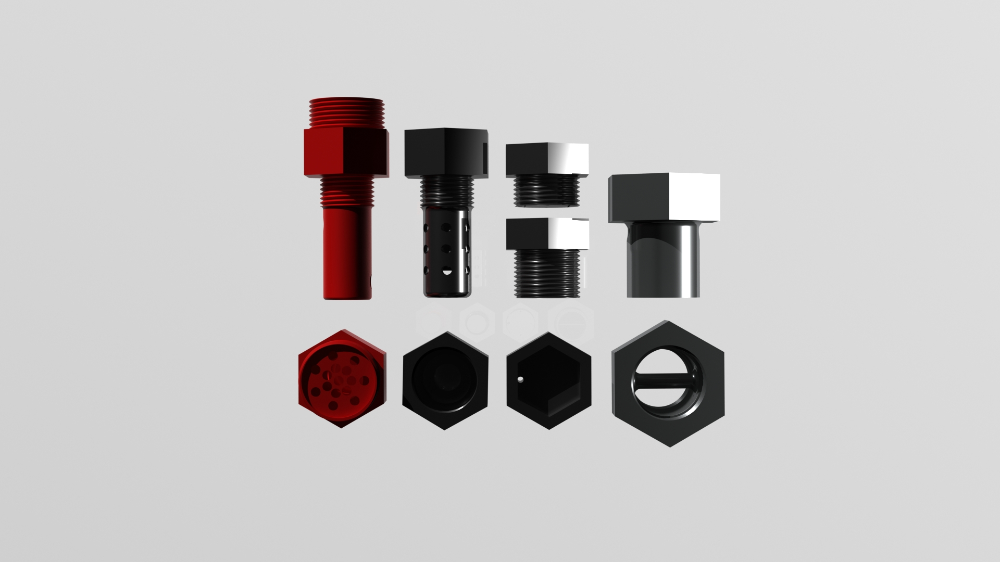
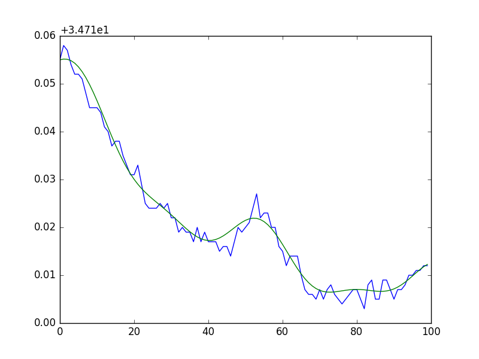

In Metz, France, I was part of a research team developing a prototype gas sensor for use in the vehicle industry. We sought to address the problem of car manufacturers not properly testing for harmful oxides. My tasks in this project ranged over both hardware and software. Using Autodesk Inventor, I modeled a precise replica of existing vehicle oxygen gas sensors, drafting multiple designs that took into account heat flux and sensor preservation. For presentation, I utilized 3DSMAX and the iray renderer to produce realistic images and animations of our product.
Some of the final designs
On the software side of things, our project aimed to be practical and inexpensive - a product that would be cheap compared to current gas sensors used in the industry. To accomplish this, we linked two Arduino Micros in a master-slave, I2C configuration that communicated with a more powerful Raspberry Pi via serial. Over the course of the project, I was in charge of debugging our existing Arduino code (taking care of synchronization and queue clearing), as well as writing data harvesting scripts in Python.
To aid in sample recognition, I replicated multiple signal smoothing and curve fitting functions (notably OriginLab's FFT smoothing filter) as well as added real-time graphing capability to the Raspberry Pi.
A sample dataset smoothed with the optimized FFT filter in real time